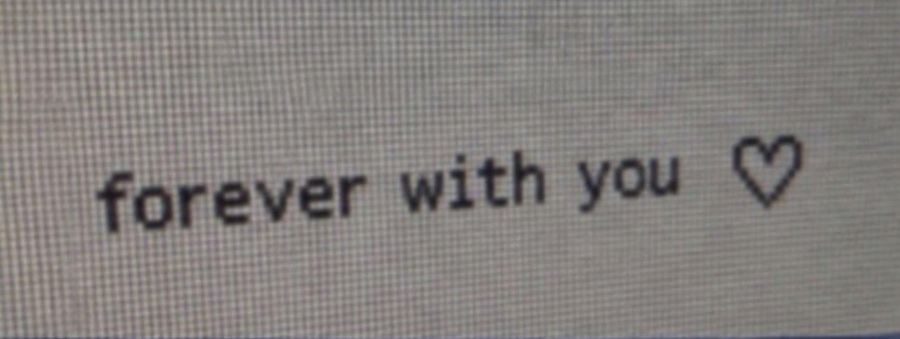

➜

‹
➜
‹
➜
‹
➜
‹
➜
♡
IdiotaBurro1904
Nosso Cantinho ♡
⌂ Início
Nossas Histórias ♡
Conversas ♡
Surpresas ♡
Espero que goste independente das escolhas
Um pequeno site, com um grande amor...
♡
🐾
Escolha por onde começar ♡
🐾
Uma mensagem para você ♡
Porque você é especial e eu quero compartilhar tudo isso com você...
Enviar resposta